まずはこの3手順
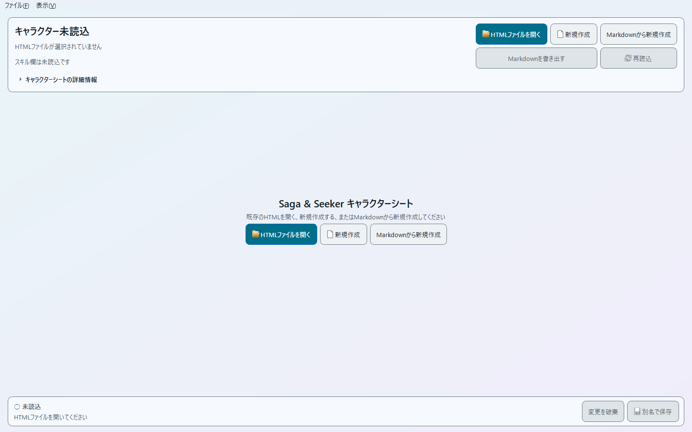
シートを開く・新しく作る
既存のキャラクターシートを開く
- 「HTMLファイルを開く」を押します。
- ゲームから出力したキャラクターシートのHTMLを選びます。
- シートが開いたら、キャラクター名と各タブの内容を確認します。
Windowsのファイル選択画面は環境によって見た目が異なります。

新しいシートを作る
「新規作成」では、空のキャラクターシートから始められます。名前、プロフィール、ステータス、スキル、性格キーワード、思い出などを入力し、完成したら「別名で保存」でHTMLを作成します。
各項目を編集する
「基本情報」「ステータス」「スキル」「性格キーワード」「思い出」のタブから、編集したい項目を選びます。
基本情報とプロフィール
キャラクター名は1行で入力します。プロフィールの各項目は複数行に対応しており、長い項目は見出しを押して開閉できます。

キャラクター画像
シートに画像が含まれている場合は、基本情報タブにプレビューが表示されます。表示できなかった場合でも他の項目はそのまま編集できます。「プレビューを再読込」で、もう一度表示を試すこともできます。
画像を変更できるシートでは、画像欄から差し替えができます。読み取り専用の場合は、現在の画像を確認することだけができます。
プロフィールを並べて確認する
「プロフィール比較を表示」を使うと、2つのプロフィール項目と性格キーワードを同時に確認できます。別ウィンドウに分けて表示することもできます。
スキル
左側の一覧からスキルを選ぶと、右側で名前と説明を編集できます。既存のデフォルトスキルを別の種類へ変更するときは、画面の案内に沿って確認操作を行います。
「デフォルトスキルを選択…」では、同梱されているゲーム内デフォルトスキルから選べます。選んだ直後は名前や説明を調整できます。内容を変更せず保存した場合はデフォルトスキルとして、名前や説明を編集して保存した場合はオリジナルスキルとして扱われます。

性格キーワード
設定したい枠を選び、キーワード名や分類から候補を探します。候補から選ぶ方式なので、公式カタログにない名前を直接入力することはできません。
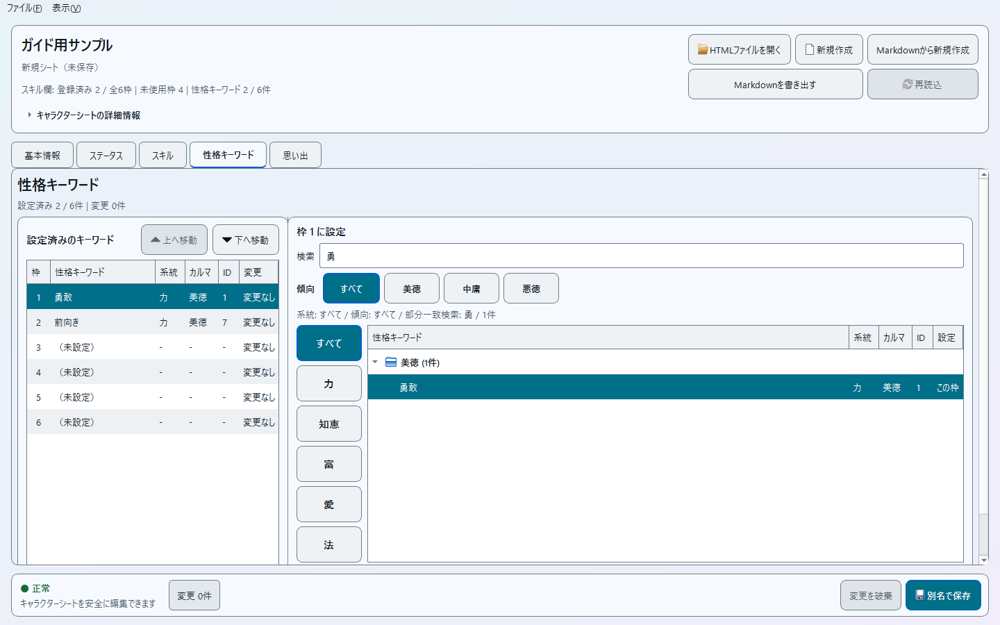
思い出
思い出は追加、並べ替え、空き枠への変更ができます。文章部分は複数行で入力できます。
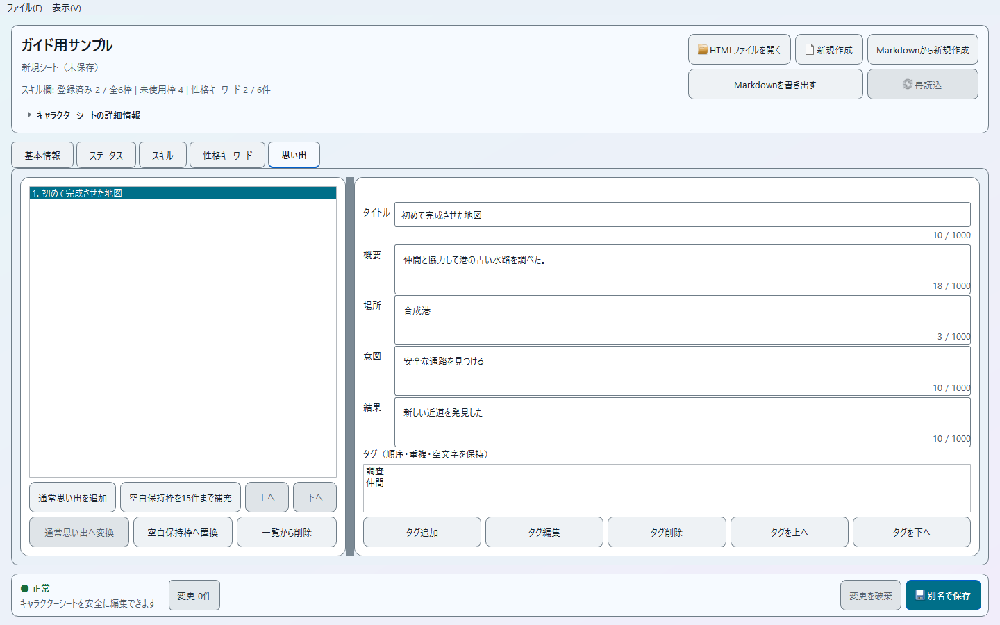
AI向けMarkdown形式 v2
AI向けMarkdown形式 v2は、キャラクターシートの内容をAIへ渡したり、AIで編集した内容から新しいシートを作ったりするための中間形式です。アプリケーションバージョン 2.1.0とは別に管理されています。
Markdownを書き出す
開いているシートから、プロフィール、ステータス、性格キーワード、スキル、AI参照用の思い出をMarkdownへ書き出します。画像や内部管理用の情報は含まれません。
Markdownから新規作成
Markdownの内容を確認したうえで、新しいキャラクターシートを作成します。すでに開いているHTMLを直接変更する機能ではありません。
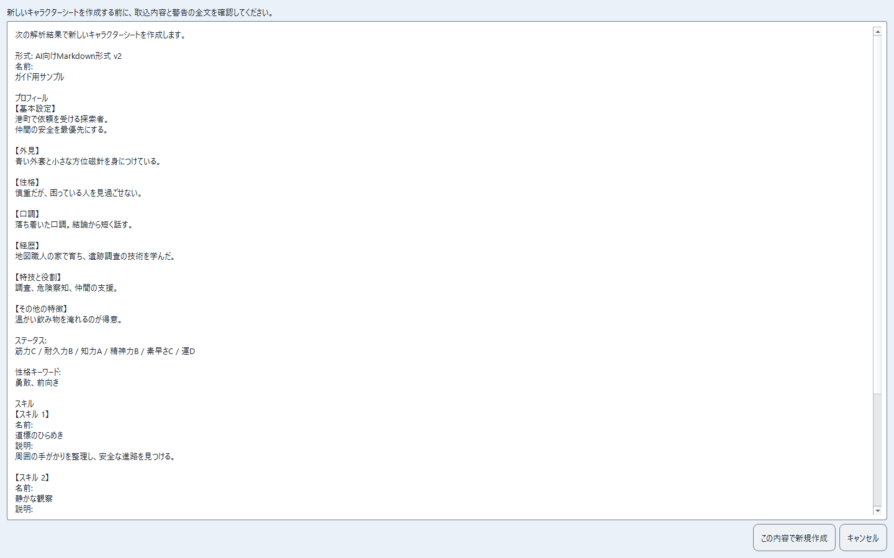
引き継がれない項目: 思い出は内容を確認できますが、Markdownから新規作成したシートへは復元されません。画像も引き継がれません。また、Markdown上のスキルは新しいオリジナルスキルとして作成されます。
以前のMarkdown形式を使う場合
以前の形式を読み込んだ場合は、まず旧形式として扱うか確認します。「旧形式として解析する」を選ぶと内容の確認画面へ進みます。必要な項目が足りない場合は警告が表示され、形式を一意に解釈できない場合は読み込みを中止します。
読み取り専用になったとき
シートの形式をこのバージョンのエディターで正しく編集できない場合は、内容を表示したまま読み取り専用になります。現在の内容を確認しながら、画面に表示される理由と対処方法を確認してください。
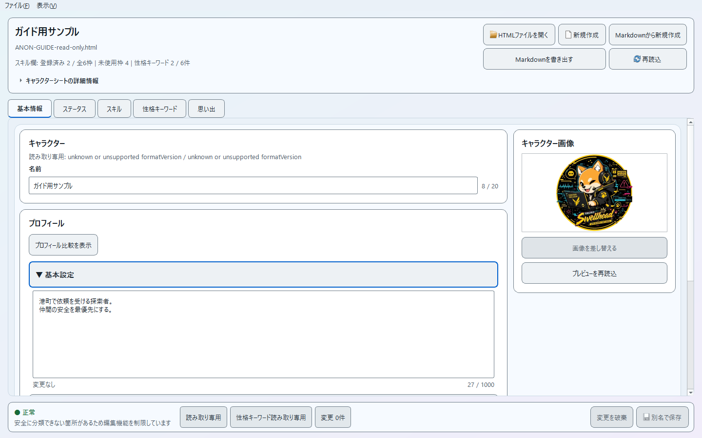
- 元のゲームからHTMLをもう一度出力し、開き直してみます。
- 画面に表示されている理由と対処方法を確認します。
- 元ファイルへ手作業で変更を加える場合は、先にコピーを残しておくと安心です。
編集したシートを保存する
- 画面下の状態表示を見て、意図した変更になっているか確認します。
- 「別名で保存」を押します。
- 保存先とファイル名を選びます。
- 保存完了の表示を確認します。
編集後のシートをゲームで確認するまでは、元のHTMLも残しておくことをおすすめします。
利用前に確認したいこと
Windows SmartScreenが表示された場合
実行ファイルの配布元とファイル名を確認し、自分が入手した配布物であることを確かめてから起動してください。入手経路に心当たりがない場合は、そのファイルを使用しないでください。
MarkdownをAIへ渡す前に
書き出したMarkdownには、キャラクターのプロフィールや思い出などが含まれます。外部のAIサービスへ送る場合は、共有したくない内容が含まれていないか先に確認してください。
困ったとき
保存ボタンを押せません
画面下の状態表示を確認してください。読み取り専用になっている場合、入力内容にエラーがある場合、スキル変更の確認が完了していない場合などは保存できません。
プロフィールの改行が消えました
アプリケーションバージョン 2.1.0では、プロフィールHTMLの <br> を改行として扱います。古い実行ファイルを使っていないか確認してください。
Markdownで編集した思い出が戻りません
AI向けMarkdown形式 v2では、思い出はAIが内容を参照するために書き出されますが、Markdownから新規作成したシートへは復元されません。
画面が見づらいです
メニューの「表示」→「外観」から、ライト、ダーク、ハイコントラストを選べます。
そのほかの画面例
各機能を使ったときの画面例です。必要な項目だけ参照してください。
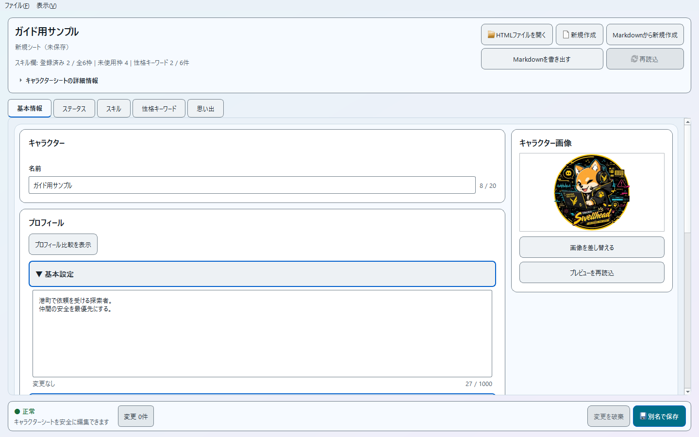
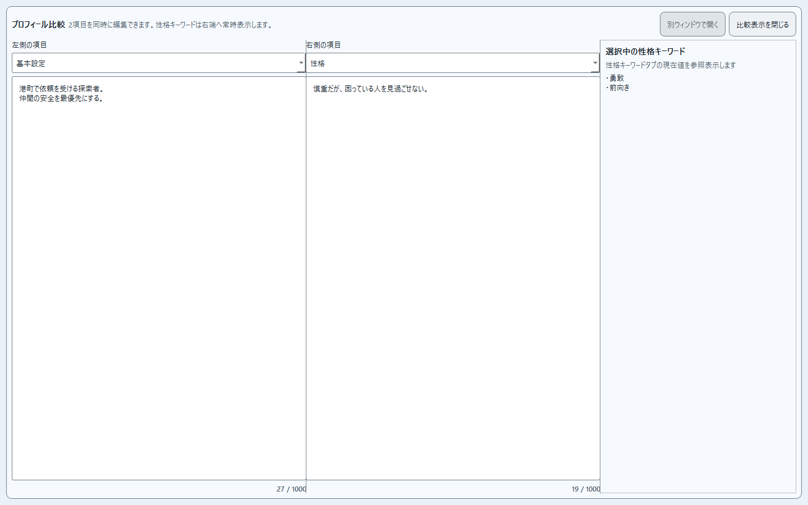
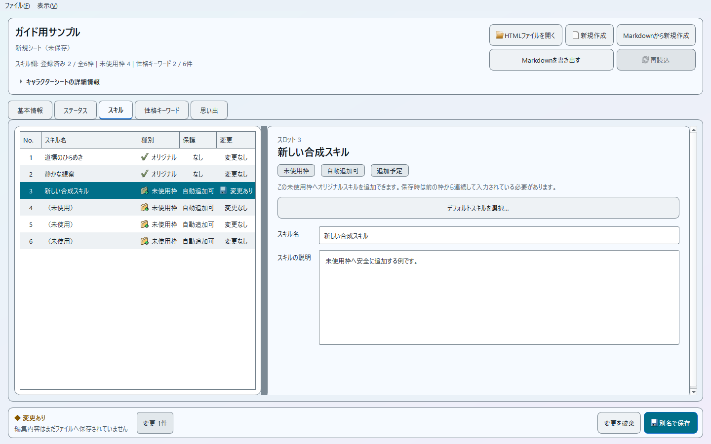
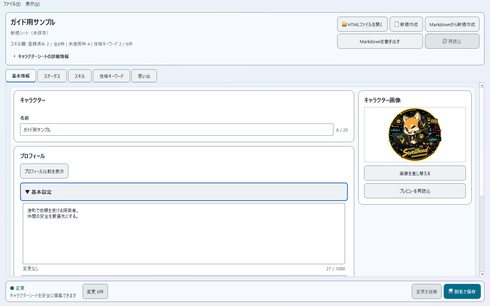
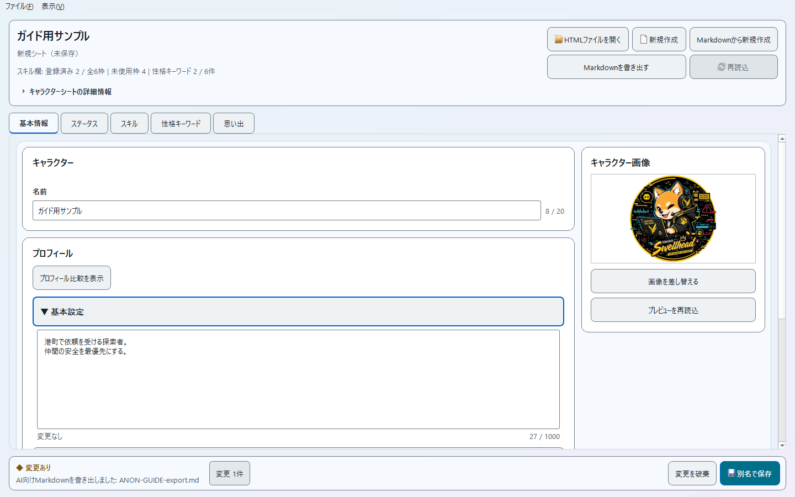
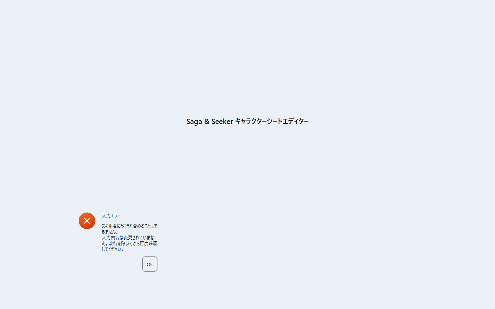
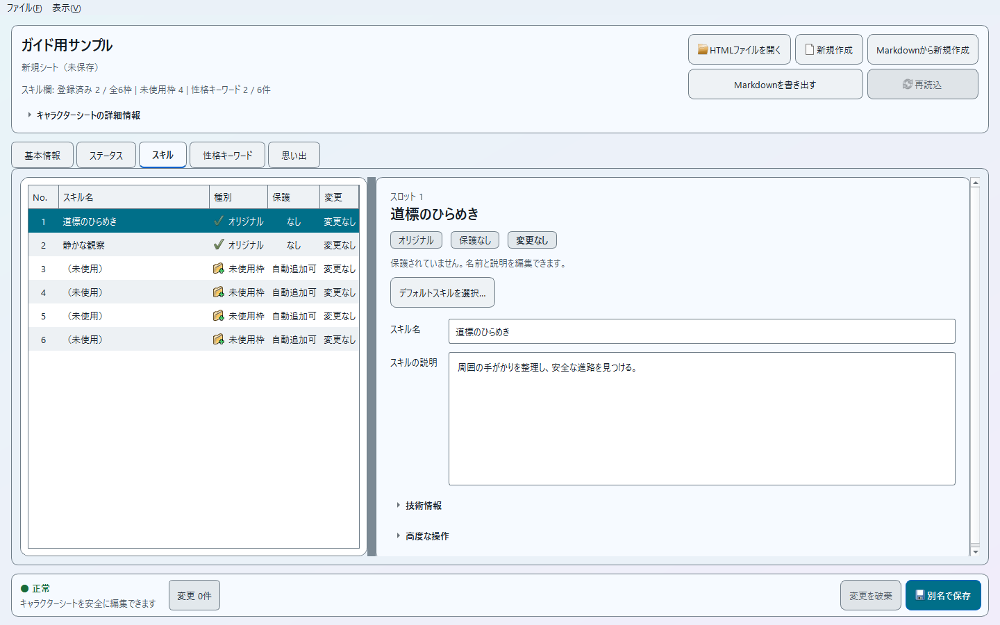
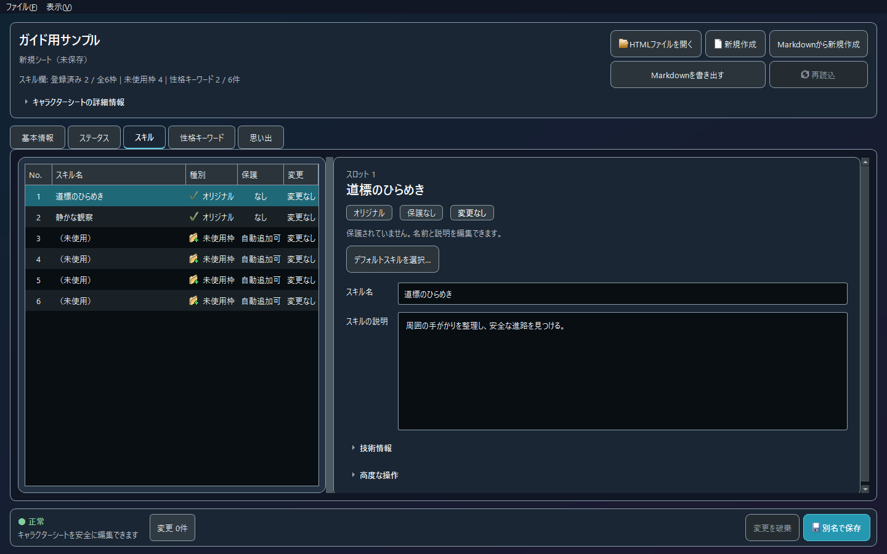
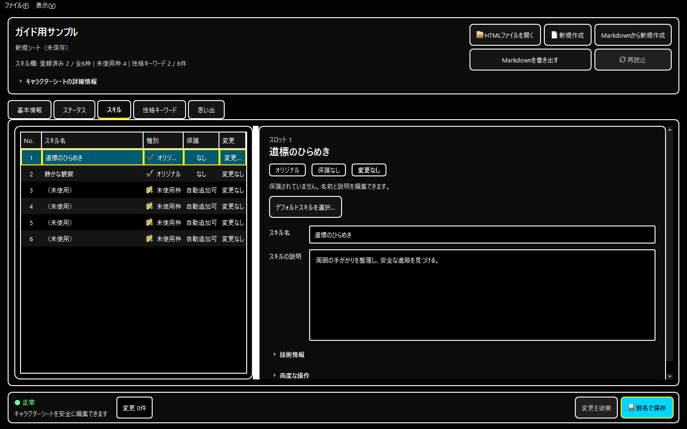
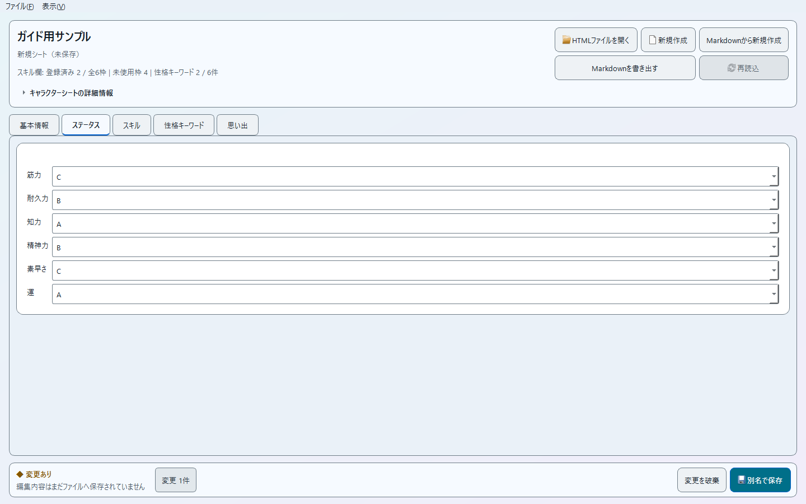